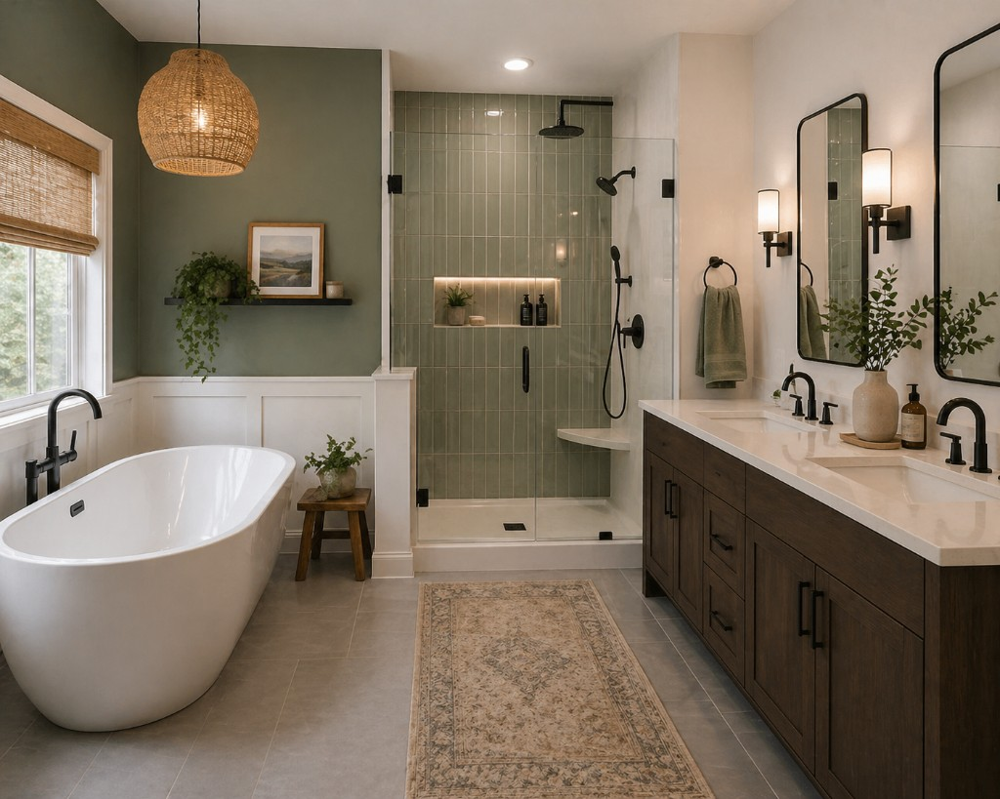

Bathroom Layout Ideas That Maximize Space
The best bathroom layouts balance comfort, clearance, and storage. With a few high-impact adjustments, even compact bathrooms can feel more open and easier to use.
Prioritize circulation first
Before selecting finishes, map your daily movement from door to vanity to shower. Keeping one clear circulation path prevents crowding and makes the room feel larger.
- Rework door swing if it blocks fixtures
- Preserve clear floor area in front of vanity and shower entry
- Avoid oversized fixtures that interrupt traffic flow
Use walls to reclaim floor space
Wall-mounted vanities, recessed niches, and mirrored cabinets add storage while preserving visual openness. Vertical planning is especially useful in narrow bathrooms where floor expansion is limited.
Split wet and dry zones when possible
Grouping shower and tub functions together helps contain moisture and simplifies cleaning. Keeping vanity and storage in a drier zone supports better long-term durability for finishes and cabinetry.
Layer lighting by function
Use ambient lighting for overall brightness, task lighting at mirrors, and accent lighting where needed. Layered lighting improves comfort and helps the room feel finished at every time of day.
FAQ
What layout change makes the biggest impact in small bathrooms?
Improving circulation and sightlines, often by changing vanity depth or door swing, delivers the biggest functional win in small spaces.
Should I separate wet and dry zones?
If layout allows, yes. Wet and dry separation supports comfort, easier maintenance, and longer-lasting materials.